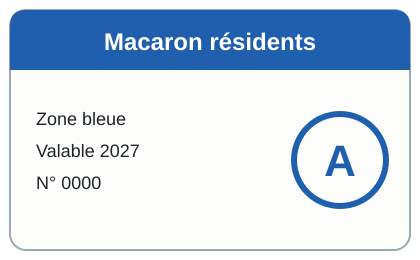

Nouveau macaron de stationnement
Le macaron 2027 change de couleur. Voici à quoi il ressemble ; il doit être placé bien visible derrière le pare-brise :

Les anciens macarons ne sont plus valables dès le 1er février 2027.
Le macaron 2027 change de couleur. Voici à quoi il ressemble ; il doit être placé bien visible derrière le pare-brise :

Les anciens macarons ne sont plus valables dès le 1er février 2027.